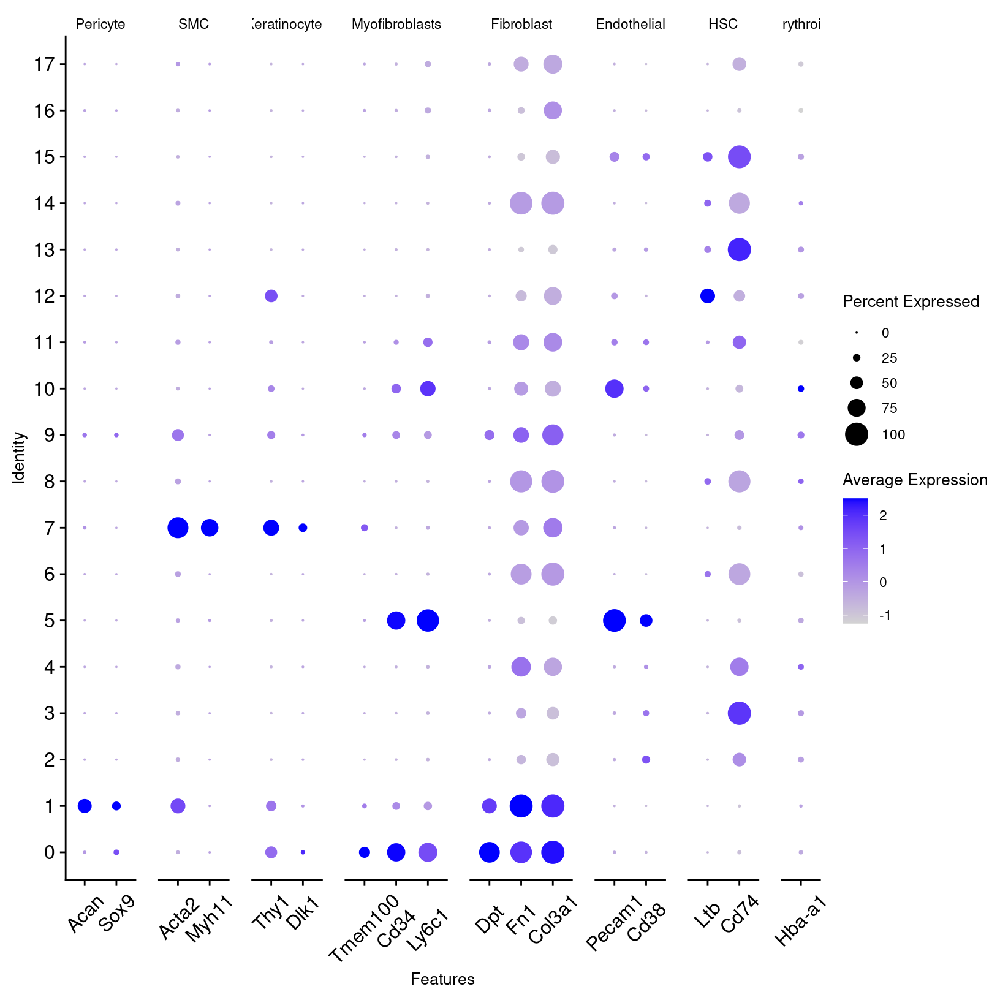

Workflow Overview

Introduction
A frequent bottleneck in the single-cell RNA-seq analysis workflow is
annotating our clustering results, as it requires bridging the gap
between the data and prior knowledge (source).
While generating markers for each cluster and evaluating the expression
of known marker genes is important, it may or may not be sufficient to
assign cell-type or sub-type labels.

|
|
For each cell-type (A), the marker genes we derived in the prior step
(B) are compared with known marker genes for different cell types (C).
Concordance between derived marker genes and known cell markers produces
a suggested annotation for that cell type.
|
In this section, our goal is to use an automated annotation tool to
generate cell type predictions for our clusters.
Like the previous sections, the process to assign cell-types to
clusters can be very iterative. In addition, the steps to reach a
“Figure 1” level of labeled clusters may not be presented in detail, can
be very dataset dependent, and often is more challenging for less
characterized tissues.
Objectives
- Understand the complexities of cell-type annotation
- Use
scCATCH cell-type predictions to annotate our
clusters
Cell type predictions
Automated tools have the advantage of being able to compare between
the expression patterns in our dataset and large numbers of reference
datasets or databases at a scale that is not feasible to do
manually.
As described in
more detail by the Ouyang Lab and summarized in the figure below,
there are many computational tools that aim to assign cell type labels
for single-cell data. These methods generally fall into three
categories:
- Marker based approaches that use gene sets drawn from the
literature, including previous single-cell studies,
- Correlation based approaches that estimate the similarity between
the cells or clusters in the input data and some reference data
- Machine learning approaches that include training on a single-cell
reference atlas.

Image: Diagram of types of cell annotation
approaches (from Oyang materials).
However, across any of these approaches the quality of the reference
data (and reliability of the authors labels) and relevancy to your
specific tissue/experiment (and the resolution of your biological
question) is crucial. Additionally, it’s important to consider that rare
or novel cell populations may not be present or well-characterized in
available references and that even after filtering, some clusters might
correspond to stressed or dying cells and not a particular cell-type or
subtype. Therefore, any prediction should be reviewed and considered in
the context both marker gene expression for the dataset and knowledge of
the biological system and broader literature.
Some tools and references are available solely or primarily for human
tissues (and not mouse or rat), particular for tissues other than PBMCs
and the brain. For human data, if a relevant reference is available for
your experiment, we would recommend trying Azimuth (created by authors
of Seurat). 10x
has a tutorial that includes example of using Azimuth, including a
feature of the tool that allows for first pass of cell-type assignment
of more common cell-types followed by identifying rarer populations that
may not be identified in the first pass.
Additional automated annotation resources
Automated cell-type annotation is an active area of research and
development and many other tools and resources are available, including
OSCA’s
demonstration of the SingleR method, a Tutorial by Clarke et
al. for cell-type annotations, and an entire
chapter of the SC best practices book.
Using scCATCH
A tool we often use for both mouse and human data cell-type
predictions is called scCATCH which, per
the author’s description in Shao et al
(2020), annotates cell-types using a “tissue-specific cellular
taxonomy reference database (CellMatch) and [an] evidence-based scoring
(ES) protocol”. The CellMatch reference is compiled from CellMarker (Zhang
et al., 2019b), MCA (Han
et al., 2018), CancerSEA (Yuan
et al., 2019), and the CD
Marker Handbook and PMIDs for relevant literature are reported in
the prediction results.

Image: scCATCH summary from Shao et al
(2020).
First, we need to load the scCATCH library. Then, we’ll double check
that we are using the expected resolution cluster results (this is
particularly important if we generated multiple resolutions in our
clustering steps), before creating a new object from our
counts data with createscCATCH() and adding
our marker genes to the scCATCCH object.
To increase the speed and accuracy of our predictions, we’ll create
query of relevant tissues (which requires some prior knowledge of the
experiment and using the scCATCH wiki to
select tissues from the species) before we run the tool:
library(scCATCH)
# check that cell identities are set to expected resolution
all(Idents(geo_so) == geo_so$integrated.sct.rpca.clusters)
[1] TRUE
# create scCATCH object, using count data
geo_catch = createscCATCH(data = geo_so@assays$SCT@counts, cluster = as.character(Idents(geo_so)))
# add marker genes to use for predictions
geo_catch@markergene = geo_markers
# specify tissues/cell-types from the scCATCH reference
geo_catch@marker = cellmatch[cellmatch$species == 'Mouse' & cellmatch$tissue %in% c('Blood', 'Peripheral Blood', 'Muscle', 'Skeletal muscle', 'Epidermis', 'Skin'), ]
# run scCATCH to generate predictions
geo_catch = findcelltype(geo_catch)
# look at the predictions
geo_catch@celltype %>% select(cluster, cell_type, celltype_score)
cluster cell_type celltype_score
1 0 Pericyte 0.75
2 1 Hematopoietic Stem Cell 0.86
3 2 Macrophage 0.82
4 3 Dendritic Cell 0.86
5 4 Monocyte 0.82
6 5 Cancer Stem Cell 0.83
7 6 Endothelial Cell 0.77
8 7 Dendritic Cell 0.79
9 8 Hematopoietic Stem Cell 0.90
10 9 Hematopoietic Stem Cell 0.91
11 10 Hematopoietic Stem Cell 0.86
12 11 Muscle Satellite Cell 0.94
13 12 Regulatory T Cell 0.90
14 13 Dendritic Cell 0.85
15 14 Stem Cell 0.88
16 15 CD8+ T Cell 0.88
17 16 Stem Cell 0.84
18 17 Hematopoietic Stem Cell 0.87
19 18 Hematopoietic Stem Cell 0.87
20 19 Muscle Cell 0.69
When we look at our results we can see the cell type score, which
gives us an idea of the confidence of that prediction. Not shown here
but the full celltype table also includes marker genes and
PMIDs for relevant literature for each prediction.
In our experience, these kinds of results often help guide cluster
annotation but scores can vary and the predictions may need to be
revised based on researcher’s knowledge of the biological system. As
these cell-types correspond to the cell-types and subtypes we’d expect
to be present in these data and most of the prediction scores are quite
high, we can reasonably use these results to annotate our clusters with
some minor adjustments.
To confirm, we’ll spot check some known markers for immune
populations. Then we’ll look look at some other key marker genes from
the original Sorkin et al (2020) paper, as well as some
other resrouces like Li
et al (2022) and Nestorowa
et al (2016) to see if other modifications should be made to the
scCATCH predictions:
# Code block - plot other markers/features to assist with identification
# spot check known immune markers
immune_markers = c('Cd14', 'Cd68', # macrophage marker
'Itgam', 'Adgre1', # Itgam=Cd11b; dendritic markers
'Ly6d', 'Cd19', 'Cd79b', 'Ms4a1', # Ms4a1=CD20; B-cell markers
'Cd3d','Cd3e','Cd3g') # T-cell markers
immune_markers_plot = DotPlot(geo_so, features = immune_markers, assay = 'SCT') + coord_flip()
immune_markers_plot
# save to file
ggsave(filename = 'results/figures/immune_markers_sct_dot_plot.png', plot = immune_markers_plot, width = 8, height = 6, units = 'in')
# plot known cell-type markers
other_markers = c('Sox9', 'Acan', # chondrocyte lineage (cartilage)
'Acta2', 'Tmem100', # myofibroblast
'Cd34','Thy1', #HSPC markers (hematopoetic stem=Cd34 and progenitors=Thy1)
'Flt3') # dendritic pre-cursor marker
other_markers_dot_plot = DotPlot(geo_so, features = other_markers, assay = 'SCT') + coord_flip()
other_markers_dot_plot
# save to file
ggsave(filename = 'results/figures/other_markers_sct_dot_plot.png', plot = other_markers_dot_plot, width = 8, height = 6, units = 'in')
 In the first plot, B-cell and T-cell markers seem to line up with the
predictions and are limited to single clusters. However, macrophage and
dendrocyte markers match to multiple clusters including some annotated
with different cell types, so we can consider modifying those cluster
labels.
In the first plot, B-cell and T-cell markers seem to line up with the
predictions and are limited to single clusters. However, macrophage and
dendrocyte markers match to multiple clusters including some annotated
with different cell types, so we can consider modifying those cluster
labels.
From the other marker genes, the patterns are less clear so we may
want to test other clustering parameters and discuss the results with a
researcher familiar with the expected cell types. However, we can notice
that none of the muscle related markers seem to be highly expressed so
we can consider holding off on labeled those cells until we are more
confident in an identify label.
Before deciding our final labels, we’ll also check the percentage of
mitochondrial genes to determine if there are any clusters (or sub
populations) that might correspond to interesting cell death patterns
(or might indicate further filtering is needed):
# Code block - check mitochondrial gene expression
percent_mito_plot = FeaturePlot(geo_so, features='percent.mt')
percent_mito_plot

# save to file
ggsave(filename = 'results/figures/percent_umap_mito_plot.png', plot = percent_mito_plot, width = 6, height = 6, units = 'in')
We see that a higher % seem to be somewhat concentrated in a few
places (the parts of cluster 7 and 11 that aren’t as well organized on
our heatmap), but since cell death might be of interest, we’d want to
consider investigating this pattern further by splitting up the plots by
day and/or waiting until after running initial differential expression
analysis to determine if these cell populations are interesting biology
or not.
Annotate clusters
Next, we’ll modify the cell type predictions and add the labels to
our Seurat object to replace our clusters’ numerical identities. Note:
we will create a new metadata object where we join cell types. However,
this will destroy the row names - which will cause a problem in Seurat -
so we have to add them back.
# Code block - annotate clusters using modified predictions
# First - Extract the cell types only from the predictions
celltype_annos = geo_catch@celltype %>% select(cluster, cell_type)
# Customize annotations
# update cluster 7, based on markers
celltype_annos$cell_type[c(8)] <- "Macrophage" # remember cluster 0 = first cluster in table
celltype_annos$cell_type[c(15)] <- "Hematopoetic precursor"
# update cluster 5, since cancer stem cells are unlikely
celltype_annos$cell_type[c(2,6)] <- "Stem Cell" # keep generic until can better characterize
# do the same for "muscle"
celltype_annos$cell_type[c(20)] <- "Unknown" # since can't confirm muscle, reset as unknown and revisit
# Merge cell types in but as a new table to slide into @meta.data
new_metadata = geo_so@meta.data %>% left_join(celltype_annos, by = c('integrated.sct.rpca.clusters' = 'cluster'))
rownames(new_metadata) = rownames(geo_so@meta.data) # We are implicitly relying on the same row order!
# Replace the meta.data
geo_so@meta.data = new_metadata
head(geo_so@meta.data)
orig.ident nCount_RNA nFeature_RNA
HODay0replicate1_AAACCTGAGAGAACAG-1 HO.Day0.replicate1 10234 3226
HODay0replicate1_AAACCTGGTCATGCAT-1 HO.Day0.replicate1 3158 1499
HODay0replicate1_AAACCTGTCAGAGCTT-1 HO.Day0.replicate1 13464 4102
HODay0replicate1_AAACGGGAGGCCCGTT-1 HO.Day0.replicate1 1189 629
HODay0replicate1_AAACGGGCAACTGGCC-1 HO.Day0.replicate1 7726 2602
HODay0replicate1_AAACGGGGTCCGAATT-1 HO.Day0.replicate1 5165 2362
day replicate percent.mt nCount_SCT
HODay0replicate1_AAACCTGAGAGAACAG-1 Day0 replicate1 1.240962 6061
HODay0replicate1_AAACCTGGTCATGCAT-1 Day0 replicate1 7.536415 4625
HODay0replicate1_AAACCTGTCAGAGCTT-1 Day0 replicate1 3.112002 5426
HODay0replicate1_AAACGGGAGGCCCGTT-1 Day0 replicate1 3.700589 4165
HODay0replicate1_AAACGGGCAACTGGCC-1 Day0 replicate1 2.938131 5858
HODay0replicate1_AAACGGGGTCCGAATT-1 Day0 replicate1 9.196515 5162
nFeature_SCT integrated.sct.rpca.clusters
HODay0replicate1_AAACCTGAGAGAACAG-1 2865 1
HODay0replicate1_AAACCTGGTCATGCAT-1 1510 1
HODay0replicate1_AAACCTGTCAGAGCTT-1 2485 5
HODay0replicate1_AAACGGGAGGCCCGTT-1 919 1
HODay0replicate1_AAACGGGCAACTGGCC-1 2585 1
HODay0replicate1_AAACGGGGTCCGAATT-1 2348 8
seurat_clusters
HODay0replicate1_AAACCTGAGAGAACAG-1 3
HODay0replicate1_AAACCTGGTCATGCAT-1 3
HODay0replicate1_AAACCTGTCAGAGCTT-1 3
HODay0replicate1_AAACGGGAGGCCCGTT-1 3
HODay0replicate1_AAACGGGCAACTGGCC-1 3
HODay0replicate1_AAACGGGGTCCGAATT-1 11
unintegrated.sct.pca.clusters
HODay0replicate1_AAACCTGAGAGAACAG-1 3
HODay0replicate1_AAACCTGGTCATGCAT-1 3
HODay0replicate1_AAACCTGTCAGAGCTT-1 3
HODay0replicate1_AAACGGGAGGCCCGTT-1 3
HODay0replicate1_AAACGGGCAACTGGCC-1 3
HODay0replicate1_AAACGGGGTCCGAATT-1 11
cell_type
HODay0replicate1_AAACCTGAGAGAACAG-1 Stem Cell
HODay0replicate1_AAACCTGGTCATGCAT-1 Stem Cell
HODay0replicate1_AAACCTGTCAGAGCTT-1 Stem Cell
HODay0replicate1_AAACGGGAGGCCCGTT-1 Stem Cell
HODay0replicate1_AAACGGGCAACTGGCC-1 Stem Cell
HODay0replicate1_AAACGGGGTCCGAATT-1 Hematopoietic Stem Cell
Checkpoint : Has the metadata for your
geo_so object been updated?
Visualise annotated clusters
Lastly, we can generate a revised UMAP plot with our descriptive
cluster labels by using our updated Seurat object and providing the new
cell_type label for the group.by argument:
catch_umap_plot = DimPlot(geo_so, group.by = 'cell_type', label = TRUE, reduction = 'umap.integrated.sct.rpca')
catch_umap_plot
ggsave(filename = 'results/figures/umap_integrated_catch.png', plot = catch_umap_plot, width = 10, height = 8, units = 'in')
catch_umap_condition_plot = DimPlot(geo_so, group.by = 'cell_type', split.by = 'day', label = TRUE, reduction = 'umap.integrated.sct.rpca')
catch_umap_condition_plot
ggsave(filename = 'results/figures/umap_integrated_catch_byCondition.png', plot = catch_umap_plot, width = 10, height = 8, units = 'in')


Save our progress
We’ll save the scCATCH object. The Seurat object has not been changed
in this module.
saveRDS(geo_so, file = 'results/rdata/geo_so_sct_integrated_with_catch.rds')
saveRDS(geo_catch, file = 'results/rdata/geo_catch.rds')
Summary
Now that we have generated reasonable annotations for our clusters,
we can proceed with the step of differential expression which is
essential to addressing our biological question for this experiment.
Next steps: Differential Expression
These materials have been adapted and extended from materials listed
above. These are open access materials distributed under the terms of
the Creative
Commons Attribution license (CC BY 4.0), which permits unrestricted
use, distribution, and reproduction in any medium, provided the original
author and source are credited.
